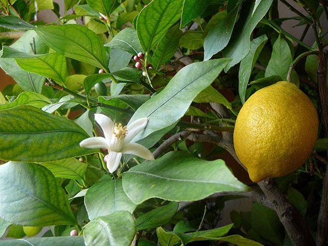

| Name | Colour | Size | Texture/Taste |
|---|---|---|---|
| Apple | Green | Medium | Crispy |
| Orange | Orange | Large | Sweet |
| Lemon | Yellow | Small | Tangy |
| Banana | Yellow | Large | Soft |
The lemon (Citrus � limon) is a species of small evergreen tree native to Asia.
The tree's ellipsoidal yellow fruit is used for culinary and non-culinary purposes throughout the world, primarily for its juice, which has both culinary and cleaning uses. The pulp and rind (zest) are also used in cooking and baking. The juice of the lemon is about 5% to 6% citric acid, which gives a sour taste. The distinctive sour taste of lemon juice makes it a key ingredient in drinks and foods such as lemonade and lemon meringue pie.
The origin of the lemon is unknown, though lemons are thought to have first grown in Assam (a region in northeast India), northern Burma or China. A study of the genetic origin of the lemon reported it to be hybrid between bitter orange (sour orange) and citron.
Lemons entered Europe near southern Italy no later than the first century AD, during the time of Ancient Rome. However, they were not widely cultivated. They were later introduced to Persia and then to Iraq and Egypt around 700 AD. The lemon was first recorded in literature in a 10th-century Arabic treatise on farming, and was also used as an ornamental plant in early Islamic gardens. It was distributed widely throughout the Arab world and the Mediterranean region between 1000 and 1150.
In 2013, world production of lemons (data combined with limes) was 15.42 million tonnes, led by India, Mexico and China as the main producers (table). Argentina and Brazil also had significant production.